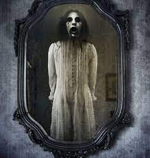

La leyenda de Verónica es una de las más populares entre quienes disfrutan de ese escalofrío de terror en la espalda. De nuevo, su origen y autoría permanecen desconocidos.
La historia cuenta que una niña llamada Verónica participó en una sesión de Ouija sin tomarse en serio la invocación, y fue asesinada en extrañas circunstancias delante de todos los participantes.
Según una de las versiones, ya que la historia varía según el lugar en el que se escuche, una silla salió volando por la habitación y golpeó a la joven por la espalda, ocasionándole la muerte.
Otra versión apunta que fueron unas tijeras las que salieron volando y provocaron la muerte de la joven por apuñalamiento. Lo que es común a todas es el ritual que conlleva esta historia.
Según la profecía, si pronuncias el nombre de Verónica tres o nueve veces (según la versión), con un libro -que suele ser la Biblia- y unas tijeras abiertas, se aparece el fantasma de la joven detrás de tu reflejo y te mata.
Otra de las versiones más extendidas entre los amantes del más allá es que el espejo se empaña y aparece la fecha de tu muerte, que en muchas ocasiones, es ese mismo día.
También, se dice que al pronunciar Verónica frente al espejo cierto número de veces, las puertas y ventanas de la habitación se cierran y la figura de una joven te acaba asesinando. Como se dice comúnmente: La curiosidad, mató al gato.